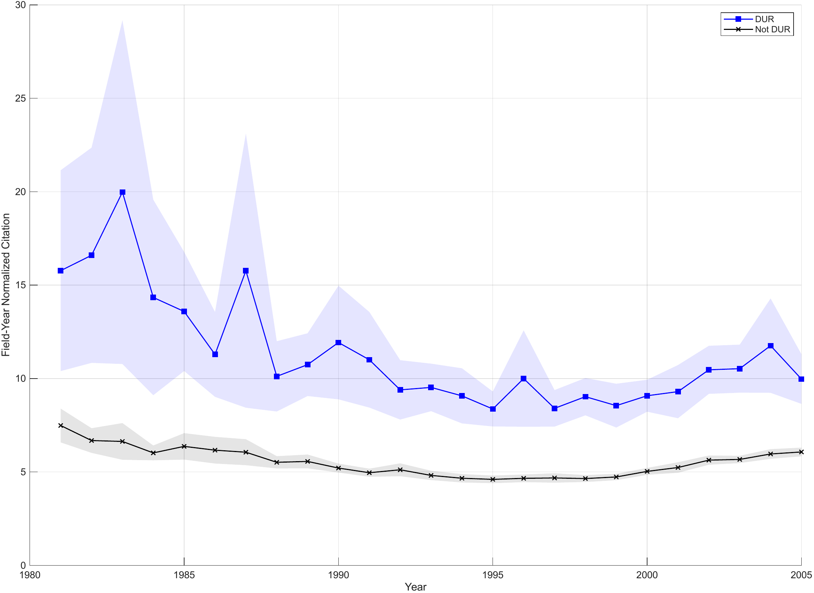

Scientific importance of dual-use research

DUR are scientifically more influential than non-DUR, sustained from 1981 to 2005. Shading indicates 99% confidence intervals.
Science
Dual-Use Research Under Scrutiny
As the U.S. tightens ex-ante oversight of dual-use research (DUR) for security reasons, two questions arise. How scientifically important is DUR — and is U.S. oversight even reaching it, given that science is global?
- Data ~600,000 research articles published 1981–2005, classified by dual-use potential
- Method Three-tiered security screening at USPTO; patent-paper citation analysis
- Finding 1 DUR is scientifically more influential, sustained over decades
- Finding 2 An increasing share of DUR emerges without U.S. federal government involvement
- Implication Heavy ex-ante oversight risks delaying diffusion of important science while losing institutional reach as DUR globalizes — pushing reliance toward costlier ex-post measures
- Open data Replication dataset on Dryad